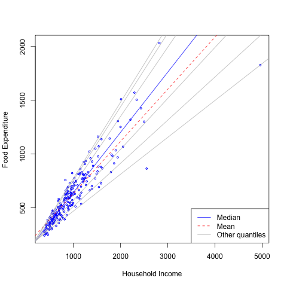
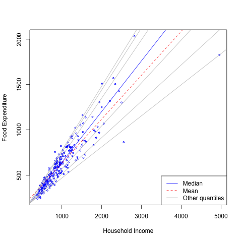
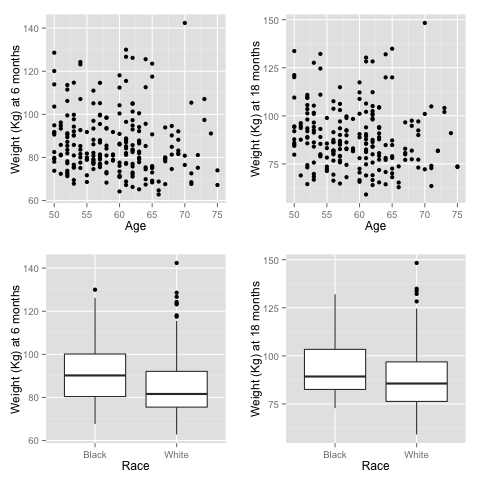

- Engel data on food expenditure vs household income for a sample of 235 19th century working class Belgian households.
- More information from quantile regression
- Slope change
- Skewness
- Less sensitive to heterogeneity and outliers
Minzhao Liu, Department of Statistics, The University of Florida
Mike Daniels, Department of Integrative Biology, The University of Texas at Austin

A missing data pattern is monotone if, for each individual, there exists a measurement occasion \(j\) such that \(R_1 = ··· = R_{j−1} = 1\) and \(R_j = R_{j+1} = · · · = R_J = 0\); that is, all responses are observed through time \(j − 1\), and no responses are observed thereafter. \(S\) is called follow-up time.
| Subject | T1 | T2 | T3 | T4 | S |
|---|---|---|---|---|---|
| Subject 1 | \(Y_{11}\) | \(Y_{12}\) | 2 | ||
| Subject 2 | \(Y_{21}\) | \(Y_{22}\) | \(Y_{23}\) | \(Y_{24}\) | 4 |
The conditional distribution of response within patterns can be decomposed as \[ P (Y_{obs}, Y_{mis} | \mathbf S, \mathbf \theta) = P (Y_{mis}|Y_{obs}, \mathbf S, \mathbf \theta_E) Pr (Y_{obs} | \mathbf S, \mathbf \theta_{y, O}), \]
\(\mathbf \theta_E\): extrapolation distribution
\(\mathbf \theta_{y, O}\) : distribution of observed responses
Multivariate normal distributions within each pattern \[ \begin{align} Y_{i1}|S_i = k & \sim N (\Delta_{i1} + \mathbf \beta_1^{(k)}, \sigma_1^{(k)} ), k = 1, \ldots, J,\\ Y_{ij}|\mathbf Y_{ij^{-}}, S_i = k & \sim \begin{cases} \textrm{N} \big (\Delta_{ij} + \mathbf y_{ij^{-}}^T \mathbf \beta_{Y,j-1}, \sigma_j \big), & k \geq j ; \\ \textrm{N} \big ( \chi(\mathbf x_{i}, \mathbf Y_{ij^{-}}), \sigma_j \big), & k < j ; \\ \end{cases}, \mbox{ for } 2 \leq j \leq J, \\ S_{i} = k|\: \mathbf x_{i} & \sim \textrm{Multinomial}(1, \mathbf \phi). \end{align} \]
The marginal quantile regression models: \[ Pr (Y_{ij} \leq \mathbf x_{i}^T \mathbf \gamma_j ) = \tau, \]
\(\chi(\mathbf x_{i}, \mathbf y_{ij^{-}})\) is the mean of the unobserved data distribution and allows sensitivity analysis by varying assumptions on \(\chi\); for computational reasons, we assume that \(\chi\) is linear in \(y_{ij^{-}}\).
Here we specify \[ \chi(\mathbf x_{i}, \mathbf y_{ij^{-}}) = \Delta_{ij} + \mathbf y_{ij^{-}}^T \mathbf \beta_{y,j-1} + h_{0}^{(k)}. \]
\(\Delta_{ij}\) are subject/time specific intercepts determined by the parameters in the model and are determined by the marginal quantile regressions, \[ \tau = Pr (Y_{ij} \leq \mathbf x_{i}^T \mathbf \gamma_j ) = \sum_{k=1}^J \phi_kPr_k (Y_{ij} \leq \mathbf x_{i}^T \mathbf \gamma_j ) \mbox{ for } j = 1, \] and \[ \begin{align} \tau &= Pr (Y_{ij} \leq \mathbf x_{i}^{T} \mathbf \gamma_j ) = \sum_{k=1}^J \phi_kPr_k (Y_{ij} \leq \mathbf x_{i}^{T} \mathbf \gamma_j ) \\ & = \sum_{k=1}^J \phi_k \int\cdots \int Pr_k (Y_{ij} \leq \mathbf x_{i}^{T} \mathbf \gamma_j | \mathbf y_{ij^{-}} ) p_k (y_{i(j-1)}| \mathbf y_{i(j-1)^{-}}) \nonumber \\ & \quad \cdots p_k (y_{i2}| y_{i1}) p_k(y_{i1}) dy_{i(j-1)}\cdots dy_{i1}. \mbox{ for } j = 2, \ldots, J .\nonumber \end{align} \]
Specific forms of missingness are needed to induce constraints to identify the distributions for incomplete patterns, in particular, the extrapolation distribution
In mixture models , MAR holds (Molenberghs et al. 1998; Wang & Daniels, 2011) if and only if, for each \(j \geq 2\) and \(k < j\): \[ p_k(y_j|y_1, \ldots, y_{j-1}) = p_{\geq j}(y_j|y_1, \ldots, y_{j-1}). \]
\[ Y_{ij}|\mathbf Y_{ij^{-}}, S_i = k \sim \begin{cases} \textrm{N} \big (\Delta_{ij} + \mathbf y_{ij^{-}}^T \mathbf \beta_{Y,j-1}, \sigma_j \big), & k \geq j ; \\ \textrm{N} \big (\Delta_{ij} + \mathbf y_{ij^{-}}^T \mathbf \beta_{y,j-1} + h_{0}^{(k)}, \sigma_j \big), & k < j ; \\ \end{cases}, \mbox{ for } 2 \leq j \leq J, \]
The observed data likelihood for an individual \(i\) with follow-up time \(S_i = k\) is \[ \begin{align} L_i(\mathbf \xi| \mathbf y_i, S_{i} = k) & = \phi_kp_k (y_k | y_1, \ldots, y_{k-1}) p_k (y_{k-1}|y_1, \ldots, y_{k-2}) \cdots p_{k} (y_1), \\ & = \phi_k p_{\geq k} (y_k | y_1, \ldots, y_{k-1}) p_{\geq k-1} (y_{k-1}|y_1, \ldots, y_{k-2}) \cdots p_{k} (y_1), \nonumber \end{align} \]
| Subject | 6 Months | 18 Months | Age | Race | Baseline |
|---|---|---|---|---|---|
| Subject 1 | \(Y_{11}\) | \(Y_{12}\) | \(x_{11}\) | \(x_{12}\) | \(Y_{10}\) |
| Subject 2 | \(Y_{21}\) | \(Y_{22}\) | \(x_{21}\) | \(x_{22}\) | \(Y_{20}\) |

We also did a sensitivity analysis based on an assumption of MNAR.